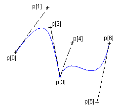

Open, Closed and Filled Polygons,
Bezier Lines and
Regions Creation
The functions cdBegin,
cdVertex and
cdEnd are use for many situations.
cdBegin is called once,
cdVertex can be called many
times, and cdEnd is called once
to actually do something. If you call cdBegin
again before cdEnd the process is
restarted, except for cdBegin(CD_REGION)
that can contains one or more polygons inside.
void cdCanvasBegin(cdCanvas* canvas, int mode); [in C]
canvas:Begin(mode: number) [in Lua]
Starts defining a polygon to be drawn (or filled) according to the mode:
CD_CLOSED_LINES, CD_OPEN_LINES, CD_FILL,
CD_CLIP, CD_REGION or CD_BEZIER.
Do not create embedded polygons, that is, do not call function
cdBegin twice without a call to
cdEnd in between.
- CD_OPEN_LINES: connects all the points at cdEnd. Depends
on line width and line style attributes.
- CD_CLOSED_LINES: connects all the points at cdEnd and
connects the last point to the first. Depends on line width and line
style attributes.
- CD_FILL: connects the last point to the first and fills
the resulting polygon according to the current interior style. When the
interior style CD_HOLLOW is defined the it behaves
as if the mode were CD_CLOSED_LINES.
- CD_CLIP: instead of creating a polygon to be drawn,
creates a polygon to define a polygonal clipping region.
- CD_BEZIER: defines the points of a bezier
curve. There must be at least 4 points: start, control,
control and end. To specify a sequence of curves use 3 more points
for each curve: control, control, end, control,
control, end, ... The end point is used as start point for the next
curve.
- CD_REGION: starts the creation of a complex
region for clipping. All calls to cdBox,
cdSector,
cdChord, Filled Polygons
and cdText will be composed in a
region for clipping. See Regions documentation.
- CD_PATH: creates a path composed of several primitives
that can be line draw, filled or used as clipping. Must call
cdCanvasPathSet to configure the action between sequences of
cdCanvasVertex.
Open, Closed and Filled Polygons

Bezier Lines

void cdCanvasVertex(cdCanvas* canvas, int x, int y); [in C]
void cdfCanvasVertex(cdCanvas* canvas, double x, double y); [in C]
void wdCanvasVertex(cdCanvas* canvas, double x, double y); (WC) [in C]
canvas:Vertex(x, y: number) [in Lua]
canvas:wVertex(x, y: number) (WC) [in Lua]
Adds a vertex to the polygon definition.
void cdCanvasEnd(cdCanvas* canvas); [in C]
canvas:End() [in Lua]
Ends the polygon's definition and draws it.
void cdCanvasPathSet(cdCanvas* canvas, int action); [in C]
canvas:PathSet(action: number) [in Lua]
Configures the action between sequences of cdCanvasVertex.
action can be:
- CD_PATH_NEW - creates a new empty path. Useful if more than one
path is configured. cdCanvasBegin(CD_PATH) already creates
a new path.
- CD_PATH_MOVETO - moves the current position to the given coordinates.
Must be followed by 1 call to cdCanvasVertex,
cdfCanvasVertex, or wdCanvasVertex.
- CD_PATH_LINETO - adds a line to the path from the current position to
the given coordinates. The current position is updated to the given
coordinates. If there is no current position, nothing is connected and only
the current position is updated. Must be followed by 1 call to
cdCanvasVertex, cdfCanvasVertex, or
wdCanvasVertex.
- CD_PATH_ARC - adds an arc to the path. If there is a current position
adds also a line from the current position to the start of the arc. The end
of the arc becomes the current position. Must be followed by 3 calls to
cdCanvasVertex, cdfCanvasVertex, or
wdCanvasVertex. One for the center of the arc (xc,yc), one
for the bounding rectangle size (w,h), and one for the start and end angles
(angle1,angle2). Angles are in degrees and oriented counter-clockwise, but
angle2 can be smaller than angle1 to describe a clockwise arc. When using integer coordinates
angles must be multiplied by 1000.
- CD_PATH_CURVETO - adds a bezier curve to the path. If there is no
current position, the first point will be used twice. The end point becomes
the current position. Must be followed by 3 calls to cdCanvasVertex,
cdfCanvasVertex, or wdCanvasVertex. Must
be first control point (x1,y1) + second control point (x2,y2) + end point
(x3,y3).
- CD_PATH_CLOSE - adds a line to the path that connects the last point
with the first point of the path, closing it.
- CD_PATH_FILL - fills the path with the current fill attributes,
then the path is discarded.
- CD_PATH_STROKE - strokes the path with the current line attributes, then the
path is discarded.
- CD_PATH_FILLSTROKE - fills the path with the current fill
attributes, strokes the path with the current line attributes, then the path
is discarded.
- CD_PATH_CLIP - use the path as a clipping area to be
intersected with the current clipping area, then the path is discarded.
So the normal path creation to draw a line will do:
cdCanvasBegin(canvas, CD_PATH);
cdCanvasPathSet(canvas, CD_PATH_MOVETO);
cdCanvasVertex(canvas, x1, y1);
cdCanvasPathSet(canvas, CD_PATH_LINETO);
cdCanvasVertex(canvas, x2, y2);
cdCanvasPathSet(canvas, CD_PATH_CURVETO);
cdCanvasVertex(canvas, x3, y3); /* control point for start point */
cdCanvasVertex(canvas, x4, y4); /* control point for end point */
cdCanvasVertex(canvas, x5, y5); /* end point */
cdCanvasPathSet(canvas, CD_PATH_ARC);
cdCanvasVertex(canvas, x6, y6); /* center */
cdCanvasVertex(canvas, x7, y7); /* width, height */
cdCanvasVertex(canvas, x8, y8); /* start angle, end angle (degrees / 1000) */
cdCanvasPathSet(canvas, CD_PATH_STROKE);
cdCanvasEnd(canvas);